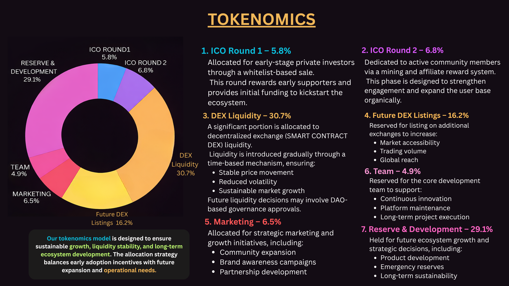

Polygon-Based Utility Token for the Trading Ecosystem
Tradecom (TRC) is a Polygon-based utility token designed for trading ecosystem development, DeFi tools, and community-driven growth with secure smart contract infrastructure.
0x56620a4c9667375577B9D543440c3EFE7Ca75673
Allocated for development & marketing.This means it also applied to transfers.
Decisions based on top holders & liquidity providers.
Ensures stability, discourages dumping, strengthens liquidity, Reward stake holders and supports long-term growth.

Smart contract available for participation.Click Below👇,(ONLY FOR WHITELIST MEMBERS)
View Contract on PolygonScanTradecom aims to build a professional trading ecosystem combining automated tools, DeFi solutions, and education into one powerful platform.